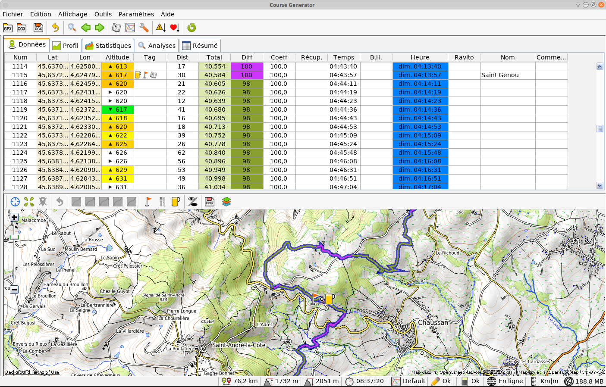
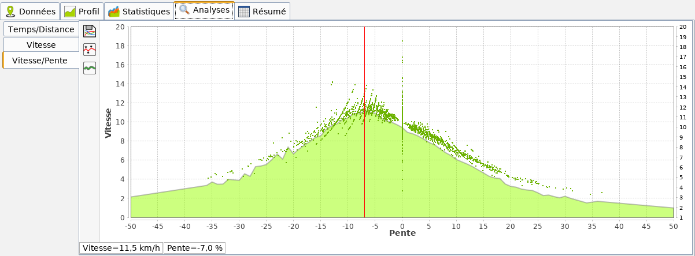
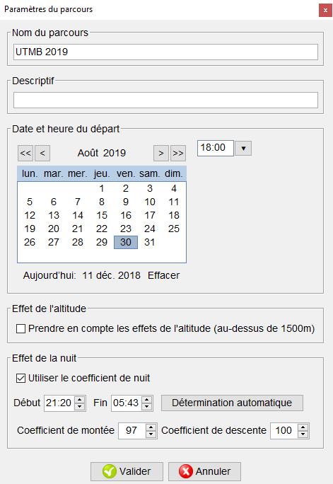
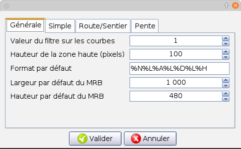
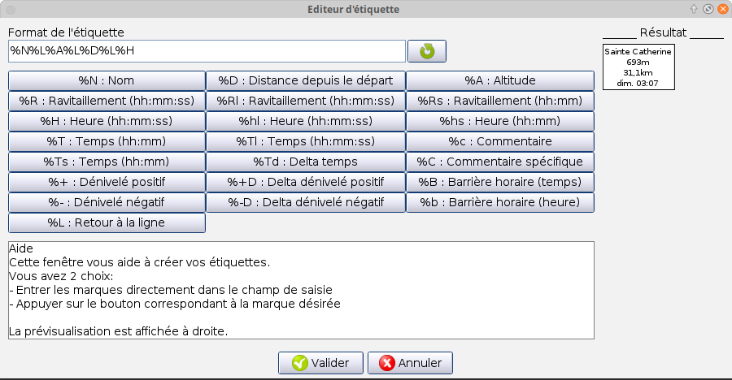

Source Wikipédia
© 2017 Pierre Delore (pierre@TechAndRun.com), CC BY-NC
Course Generator permet de traiter vos fichiers GPS afin de :
Et beaucoup d’autres choses…
Des conventions d’écritures ont été adoptées dans ce manuel. Elles sont détaillées ci-dessous.
J’ai créé Course Generator en 2008 afin de m’aider à préparer mon premier 100km en Ultra-trail. Je l’ai complété au fur et à mesure de mes besoins. Un petit article dans Ultrafondu m’a permis de commencé à le faire connaître et je l’ai ensuite fait grandir avec le retour des utilisateurs. Il a énormement évolué et plusieurs fois, je l’ai réécris afin de l’adapter à mes besoins. A chaque fois cela été un défi et comme les courses que j’ai couru, cela été une aventure qui m’a fait grandir (connaissances, remise en cause, ouverture d’esprit…).
Course Generator n’a pas le prétention de vous donner des résultats totalement justes. Trop de choses dépendent de vous et de conditions extérieures. Considérez ce logiciel comme une aide vous permettant de préparer vos prochaines aventures.
Vous remarquerez que je n’emploie pas le terme “course” car pour moi l’approche “aventure” d’une course, aussi dure soi-elle, m’a toujours permis d’aller au bout grâce à son approche positive (sans oublier le chrono quand même:) ).
Le développement de Course Generator a été une aventure et continue à l’être.
Si appréciez ce logiciel vous pouvez contribuer de différentes façons:
Partez à l’aventure avec Course Generator.
Pierre DELORE
Le logiciel collecte dans les logs des informations sur votre configuration matérielle et logicielle. Ces données sont dans le répertoire ‘logs’ qui est accessible via le menu “Outils>Afficher le répertoire contenant les fichiers courbes vitesse/pente”. Rien de sort de votre ordinateur. C’est uniquement en cas de problème que je vais vous demander de m’envoyer les fichiers ‘logs’.
Pour fonctionner Course Generator a besoin, en entrée, de données contenant une suite de point GPS représentant un parcours.
Ces données peuvent être :
Le format GPX est un format standard d’échange de donnée cartographique créé par GARMIN. Ces données sont soit issue d’un GPS soit issue d’un logiciel ou d’un site internet.
Il permet d’échanger :
Source Wikipédia
Lors de l’ouverture d’un fichier GPX, Course Generator n’exploite que les traces. Les autres constituants sont ignorés.
Le format CGX est le format de sauvegarde propre à Course Generator. Il permet en plus de la latitude, de la longitude et de l’altitude, de stocker l’ensemble des données spécifiques à Course Generator. Cela comprend par exemple : la difficulté du terrain, les points de ravitaillement, les commentaires, les données du mini-roadbook… Ce format permet d’échanger un parcours avec un ensemble complet de renseignements sur celui-ci.
Le diagramme ci-dessous montre le principe de fonctionnement de Course Generator.

Les cas d’utilisation suivant pourraient être envisagés (liste non exhaustive) :

Faut-il obligatoirement avoir GPS Garmin pour utiliser Course Generator?
Non! Mais c’est un plus si vous voulez utiliser la fonctionnalité partenaire virtuel. C’est ce qui m’a poussé à créer Course Generator (même si maintenant je n’utilise presque plus cette fonctionnalité).
Au lancement du logiciel vous obtenez la fenêtre suivante:

L’interface du logiciel est composée (de haut en bas):
 �
�
Ouvrir un fichier GPX : Permet de charger un fichier au format GPX. Raccourci clavier: [MAJ+CTRL+O].
Ouvrir un fichier CGX : Permet de charger un fichier au format CGX. Raccourci clavier: [CTRL+O].
Derniers fichiers GPX : Permet l’affichage d’un sous-menu listant les 5 derniers fichiers GPX qui ont été ouvert. Un clic sur un de ces fichiers permet de l’ouvrir.
Derniers fichiers CGX : Permet l’affichage d’un sous-menu listant les 5 derniers fichiers CGX qui ont été ouvert. Un clic sur un de ces fichiers permet de l’ouvrir.
Sauver CGX : Permet de sauver les données du parcours au format CGX. Toutes les données du parcours (difficultés, coefficient de fatigue, temps de ravitaillement….) sont sauvegardées. Raccourci clavier: [CTRL+S].
Sauver GPX : Permet de sauver les données du parcours au format GPX. Attention! Seules les données de latitude, de longitude, d’altitude et de temps sont sauvées.
Sauver CSV : Permet de sauver les données du parcours au format CSV. Ce fichier pourra être ouvert par un tableur comme Excel ou OpenOffice Calc.
Importer un fichier GPX : Permet d’insérer un fichier GPX au début ou à la fin du parcours actif.
Importer un fichier CGX : Permet d’insérer un fichier CGX au début ou à la fin du parcours actif.
Sauver une partie du parcours en CGX : Permet de sauver les lignes sélectionnées du tableau au format CGX. Toutes les données du parcours (difficultés, coefficient de fatigue, temps de ravitaillement….) sont sauvegardées.
Sauver une partie du parcours en GPX : Permet de sauver les lignes sélectionnées du tableau au format GPX. Attention! Seules les données de latitude, de longitude, d’altitude et de temps sont sauvés.
Sauver une partie du parcours en CSV : Permet de sauver les lignes sélectionnées du tableau au format CSV. Ce fichier pourra être ouvert par un tableur comme Excel ou OpenOffice Calc.
Importer des points : Permet d’importer des points sauvegardés au format CGP.
Exporter des points : Permet de sauvegarder les points marqués dans un fichier au format CGP.
Exporter des tags en waypoints : Permet de sauvegarder les tags sélectionnés dans un fichier GPX sous forme de waypoints. Cela permet d’avoir, sur les GPS, des informations complémentaires en plus des traces.
Quitter Course Generator : Permet d’arrêter l’exécution de Course Generator. raccourci clavier: [Alt+F4].
 �
�
Copier : Permet de copier la cellule courante dans le presse papier. Raccourci clavier: [CTRL+C].
Recherche d’un point… : Permet de rechercher un point GPS par sa longitude et sa latitude. Le point le plus proche est sélectionné. Raccourci clavier: [CTRL+F].
Marquer la position courante : Permet de mettre une marque sur la ligne courante. Si la ligne contient déjà une marque, elle est alors supprimée. Raccourci clavier: [F6].
Aller à la marque suivante : Permet de sélectionner la ligne contenant le Tag suivant. Raccourci clavier: [F7].
Aller à la marque précédente : Permet de sélectionner la ligne contenant le Tag précédent. Raccourci clavier: [Ctrl+F7].
 �
�
 �
�
Détermination des mini/maxi : Permet de déterminer les points haut et bas du parcours.
Inversion du parcours : Permet d’inverser le sens du parcours.
Définir un nouveau point de départ: Permet, pour un circuit en boucle, de définir un nouveau point de départ.
Estimer le temps de parcours : Permet de lancer le calcul afin de déterminer le temps de passage pour chaque point GPS du parcours. Raccourci clavier: [F5].
Afficher le répertoire contenant les fichiers courbes vitesse/pente : Ouvre l’explorateur de fichier et affiche le répertoire correspondant.
 �
�
Paramètres du parcours… : Permet d’ouvrir une fenêtre permettant de régler les paramètres de la course. Raccourci clavier: [F9].
Courbes vitesses/pentes… : Permet d’ouvrir une fenêtre permettant de choisir ou de créer une courbe de vitesse par rapport à la pente.
Paramètres de Course Generator… : Permet de régler les paramètres spécifique au logiciel Course Generator.
 �
�
Aide : Affiche ce document.
Encourager l’auteur… : Ce menu ouvre votre navigateur internet et affiche la page internet permettant de faire un don à l’auteur afin de l’encourager dans le développement de Course Generator.
Page internet de Course Generator… : Ce menu ouvre votre navigateur internet et affiche la page internet sur les dernières nouvelles concernant Course Generator.
A propos… : Permet d’afficher les informations de copyright et de version du logiciel.
 : Permet de charger un parcours au format GPX
: Permet de charger un parcours au format GPX : Permet de charger un parcours au format CGX
: Permet de charger un parcours au format CGX : Permet de sauvegarder le parcours au format CGX
: Permet de sauvegarder le parcours au format CGX �: Permet d’annuler la dernière commande
�: Permet d’annuler la dernière commande : Permet de faire la recherche d’une position GPS
: Permet de faire la recherche d’une position GPS : Permet de rechercher la marque précédente
: Permet de rechercher la marque précédente : Permet de rechercher la marque suivante
: Permet de rechercher la marque suivante : Permet d’afficher le mini roadbook
: Permet d’afficher le mini roadbook : Permet d’afficher la fenêtre de choix de la courbe vitesse/pente
: Permet d’afficher la fenêtre de choix de la courbe vitesse/pente : Permet d’ouvrir la fenêtre de paramètres du parcours
: Permet d’ouvrir la fenêtre de paramètres du parcours : Permet d’afficher la fenêtre de réglage global de la qualité du terrain
: Permet d’afficher la fenêtre de réglage global de la qualité du terrain : Permet d’afficher la fenêtre de réglage global du coefficient de fatigue
: Permet d’afficher la fenêtre de réglage global du coefficient de fatigue : Permet de calculer le temps de parcours
: Permet de calculer le temps de parcoursSituée sur le bas de la fenêtre elle affiche les informations sur l’application et le parcours.

 : Distance totale du parcours.
: Distance totale du parcours. : Dénivelé positif total du parcours.
: Dénivelé positif total du parcours. : Dénivelé négatif total du parcours.
: Dénivelé négatif total du parcours. : Temps total pour réaliser le parcours.
: Temps total pour réaliser le parcours. : Courbe ‘Vitesse/Pente’ sélectionnée.
: Courbe ‘Vitesse/Pente’ sélectionnée. : Indique qu’une barrière horaire a été dépassé à un endroit du parcours. Un clic sur cet indicateur positionne la sélection du tableau sur la première ligne concernée.
: Indique qu’une barrière horaire a été dépassé à un endroit du parcours. Un clic sur cet indicateur positionne la sélection du tableau sur la première ligne concernée. : Le parcours a été modifié. Il est nécessaire de le sauvegarder.
: Le parcours a été modifié. Il est nécessaire de le sauvegarder. : Le parcours a été modifié. Il est nécessaire de relancer le calcul (bouton ou [F5]).
: Le parcours a été modifié. Il est nécessaire de relancer le calcul (bouton ou [F5]). : Indique l’état de la connexion internet.
: Indique l’état de la connexion internet. : Indique les unités de mesures utilisées.
: Indique les unités de mesures utilisées. : Indique la taille disque utilisée par les cartes.
: Indique la taille disque utilisée par les cartes.La zone haute contient une série d’onglet qui permet de choisir le type de donnée à afficher.
Cet onglet affiche toutes les données du parcours.

Un double clique sur une des ligne ouvre la fenêtre d’édition.
Le détail des colonnes est décrit ci-dessous:
 : Indique un point haut.
: Indique un point haut. : Indique un point bas.
: Indique un point bas. : Indique un point de ravitaillement.
: Indique un point de ravitaillement. : Indique un point d’eau.
: Indique un point d’eau. : Indique que le point a été marqué.
: Indique que le point a été marqué. : Indique un lieu remarquable.
: Indique un lieu remarquable. : Indique une note.
: Indique une note. : Indique une information.
: Indique une information. : Indique le début ou la fin d’une section de roadbook. permet de remplir rapidement un ensemble de position. Vous trouverez ci-dessous les valeurs utilisés par Softrun (www.softrun.fr). Merci à Rémi Poisvert pour ces informations.
permet de définir une régle d’évolution globale du coefficient de fatigue..
: Indique le début ou la fin d’une section de roadbook. permet de remplir rapidement un ensemble de position. Vous trouverez ci-dessous les valeurs utilisés par Softrun (www.softrun.fr). Merci à Rémi Poisvert pour ces informations.
permet de définir une régle d’évolution globale du coefficient de fatigue..Cet onglet affiche le profil du parcours.

Si une marque a été positionnée dans le tableau alors un point apparaît sur la courbe ainsi que son numéro d’ordre. Ce numéro correspond à la ligne du tableau de l’onglet Résumé.
Un clique gauche sur la courbe permet de positionner un curseur et d’obtenir des informations sur le point (issue du tableau).
Un clique droit sur la courbe permet d’afficher un menu permettant de régler l’affichage de la courbe et de la sauvegarder sous forme d’image (format PNG).
Le bouton  permet d’afficher la position des lignes du tableau “Résumé”.
permet d’afficher la position des lignes du tableau “Résumé”.
Cet onglet permet d’obtenir des statistiques sur le parcours.
Les statistiques concernent entre autre:
Le bouton  permet de sauver ces données au format HTML.
permet de sauver ces données au format HTML.
Le bouton  permet de rafraîchir les données.
permet de rafraîchir les données.
Cet onglet permet d’obtenir une analyse de votre parcours. Il contient 3 sous-onglets qui sont détaillés ci-dessous.
Cet onglet pemret de faire une analyse de votre vitesse dans le temps. 
Deux courbes sont présentes:
L’étude de la courbe de temps/distance permet de voir son évolution sur le parcours (accélération ralentissement, arrêté). Le changement de pente de la courbe rouge indique une variation de vitesse.
Les cas suivants sont possibles:
Cet onglet permet d’obtenir de faire une analyse de la vitesse sur votre parcours.

Deux courbes sont présentes:
Le bouton permet de sauver le profil sous forme d’image.
Cet onglet permet d’extrapoler une courbe vitesse par rapport à la pente.

Cette courbe est utile pour créer ses propres courbes vitesse/pente en fonction d’un parcours réalisé. Deux courbes sont présentes:
Le bouton permet de sauvegarder la courbe résultat (courbe rouge) dans la bibliothèque des courbes vitesse/pente. Elle sera exploitable dans la fenêtre courbe.
La boite de dialogue suivante apparaît:

Le champ de saisie “Nom” permet de saisir le nom de la courbe.
Le champ de saisie “Commentaire” permet de saisir un commentaire.
Le bouton  permet de corriger la courbe vitesse/pente avec les paramètres du parcours (difficulté du terrain et fatigue).
permet de corriger la courbe vitesse/pente avec les paramètres du parcours (difficulté du terrain et fatigue).
Le bouton  permet de filtrer la vitesse de la courbe vitesse/pente.
permet de filtrer la vitesse de la courbe vitesse/pente.
Cet onglet affiche un tableau regroupant toutes les lignes du parcours contenant une marque.
Pour chaque ligne vous avez:
Le bouton permet de sauvegarder les données du tableau au format CSV afin de les exploiter dans un tableur (Excel, OpenOffice Calc…).
Le bouton permet de rafraîchir les données.
La procédure normale d’utilisation de Course Generator est:
Les sous-chapitres vont décrire l’ensemble de ces manipulations (et bien plus encore).
Deux types de fichier peuvent être ouverts par Course Generator.
Le chargement d’un parcours se fait par le menu “Fichier>Ouvrir un fichier GPX” ou “Fichier>Ouvrir un fichier CGX” en fonction du format choisi.
Lors de l’ouverture du fichier vous pourriez avoir le message suivant: ((image message))
Ce message apparaît car certain fichiers ne contiennent pas de donnée temporelle ce qui empêche Course Generator d’afficher le temps et l’heure de passage pour chaque point. Ces colonnes sont alors mises à 0 et un réglage des paramètres du parcours puis l’exécution du calcul du parcours sont alors nécessaire.
Le paramétrage du parcours est réalisé avec “Paramètres>Paramètres du parcours” ou [F9].
La fenêtre de configuration ci-dessous est alors affichée.

Vous pouvez alors:
La fenêtre suivante s’affiche:

Saisissez le fuseau horaire (1 pour la France). L’heure de levée et de couché du soleil sont alors affichées.
Une fois le réglage terminé, appuyez sur “Valider” afin de valider votre saisie.
Si vous avez sélectionné la prise en compte de la nuit, vous pourrez constater que la colonne “Heure” à un fond bleu durant les périodes de nuit et vert durant les périodes de jour.
Afin d’avoir une durée de parcours cohérente avec votre niveau, il faut choisir ou créer une courbe de vitesse par rapport à la pente. Cette courbe va de -50% de pente (descente) à +50% de pente (montée). Le choix de la courbe se fait par le choix de la vitesse que l’on veut “tenir” lorsque la pente est nulle (0%) sur un terrain goudronné. Un ensemble de courbes ont été créée afin de couvrir la plupart des utilisations en course à pied.
Le menu “Paramètres>Courbes Vitesse/Pente…” ou le bouton permettent d’afficher la boite de dialogue permettant de séléectionner et gérer les courbes.
Sur la gauche apparaît la liste des courbes déjà créée. Lors de la création, un nom explicite leur a été donné afin de les retrouver rapidement. Essayez de conserver ce principe si vous créez de nouvelles courbes.
Le bouton  permet de charger les données du fichier courbe sélectionné dans la liste.
permet de charger les données du fichier courbe sélectionné dans la liste.
Le bouton  permet de modifier les données de la courbe sélectionnée.
permet de modifier les données de la courbe sélectionnée.
Le bouton  permet de créer une nouvelle courbe.
permet de créer une nouvelle courbe.
Le bouton  permet de dupliquer la courbe sélectionnée.
permet de dupliquer la courbe sélectionnée.
Le bouton  permet de supprimer la courbe sélectionnée.
permet de supprimer la courbe sélectionnée.
Comment choisir sa courbe de vitesse?
Cela va dépendre de vous, de vos objectifs… Vous pouvez vous baser sur un pourcentage de votre VMA. Par exemple pour un trail long vous pouvez prendre 60% de votre VMA. Environ 10km/h dans mon cas, je sélectionne alors la courbe de 10km/h. Vous pouvez aussi utiliser Softrun (www.softrun.fr) afin d’évaluer votre niveau et donc de pouvoir choisir votre courbe.
Il y a aussi l’expérience. Au début vous allez sûrement sous-évaluer ou sur-évaluer votre vitesse. Mais avec le temps votre choix va devenir de plus en plus juste.
Notes:
La colonne “Diff” permet de ‘quantifier’ la difficulté du terrain.
Vous pouvez saisir rapidement la difficulté du terrain pour un ensemble de point. Il vous suffit de sélectionner la première ligne puis tout en maintenant la touche SHIFT enfoncé vous sélectionnez les lignes suivantes (à la souris ou au clavier). Le bouton permet d’afficher la boite de dialogue de remplissage automatique.

La zone “Début” permet de définir la ligne de départ (depuis le début ou depuis un numéro de ligne précis).
La zone “Fin” permet de définir la ligne de fin (jusqu’à la fin ou jusqu’à un numéro de ligne précis).
La zone “difficulté” permet de choisir la difficulté du terrain. Vous pouvez soit utiliser les valeurs pré-déterminées, soit saisir votre propre valeur de difficulté.
Cette action peut aussi être faite sur la carte du parcours (voir plus bas).
Note:
Il est parfois impossible de déterminer la qualité du terrain à cause de la méconnaissance de celui-ci. Il peut alors être judicieux de fixer une qualité moyenne du terrain pour l’ensemble du parcours. Par exemple, la Montagn’hard 100 a été qualifiée en terrain moyen sur l’ensemble du parcours. Même si certains passages étaient trés difficile (pierriers, zones glissantes…) et d’autres trés roulants (routes ou pistes).
Il ne faut pas prendre en compte lors de votre choix la déclinivité du terrain car cela est pris en compte via la courbe “Vitesse/Pente” et le calcul de la pente fait automatiquement par Course Generator.
La colonne “Coeff” permet de ‘quantifier’ la fatigue dans le temps.
Vous pouvez saisir rapidement le coefficient de fatigue pour un ensemble de point (plus généralement pour l’ensemble du parcours). Il vous suffit de sélectionner la première ligne puis tout en maintenant la touche SHIFT enfoncé vous sélectionnez les lignes suivantes (à la souris ou au clavier). Le bouton permet d’afficher la boite de dialogue de remplissage automatique.

La zone “début” permet de sélectionner le début de la zone de prise en compte du coefficient. Le champ “Valeur initiale” permet de saisir la valeur correspondante.
La zone “Fin” permet de sélectionner la fin de la zone de prise en compte du coefficient. Le champ “Valeur finale” permet de saisir la valeur correspondante.
Si la valeur de fin n’est pas égale à la valeur de début alors on aura, pour les lignes intermédiaires, une variation progressive et linéaire de la valeur.
Les éditions manuelles faites par l’intermédiaire de l’éditeur de ligne seront écrasées.
Les réglages fait dans cette fenêtre seront globaux et mémorisés dans le fichier CGX lors de la sauvegarde.
La zone “Aide” permet en fonction du temps que vous estimez réaliser de vous donner une valeur approximative du coefficient de fatigue. Cette valeur peut être recopiée dans les zones “> Début” et “> Fin” via les boutons correspondant.
Afin de coller au mieux à la réalité, vous pouvez saisir pour un point donné le temps que vous prévoyez pour votre ravitaillement (ou votre repos). Pour cela mettez-vous sur la cellule concernée et ouvrez l’éditeur de ligne en faisant un double clique.
La boite dialogue suivante s’affiche:

Les champs “Temps de ravitaillement” permettent de saisir le temps d’arrêt à cette emplacement (heures, minutes et secondes). Le bouton “0” permet de remettre le temps à 00h00mm00s.
Question fréquente!
Le temps ou l’heure affiché sur la ligne contenant un temps de ravitaillement est le temps ou l’heure à laquelle vous prévoyez de quitter cette position.
C’est le mode fonctionnement de Course Generator qui impose cette méthode de calcul.Pour résumer:
[Heure] = [Heure de la position précédente] + [Temps de parcours entre le 2 positions] + [Temps de ravitaillement][Temps] = [Temps de la position précédente] + [Temps de parcours entre le 2 positions] + [Temps de ravitaillement]
Vous pouvez saisir pour un point donné le coefficient de récupération suite à un ravitaillement ou à un repos. Pour cela mettez-vous sur la cellule concernée et ouvrez l’éditeur de ligne en faisant un double clique.
La boite dialogue suivante s’affiche:
Le champ “Récupération” permet de saisir le coefficient de récupération (entre 0 et 100). Cette valeur est relative. C’est-à-dire que si vous pensez récupérer 5% de coefficient de fatigue, il faut saisir 5 et non la valeur que vous pensez avoir (par exemple passer de 85% à 90%).
Note :
Après avoir modifié la colonne “Récup.”, il est nécessaire de relancer un calcul global avec le bouton afin que votre saisie soit prise en compte.
Vous pouvez saisir pour un point donné la barrière horaire prévue. Cette barrière horaire est exprimée en temps depuis le départ et non en heure de passage. Cela permet de prendre en compte les décalages de départ (par exemple l’UTMB 2011 avec 5h de retard). Pour cela mettez-vous sur la cellule concernée et ouvrez l’éditeur de ligne en faisant un double clique.
La boite dialogue suivante s’affiche:
Les champs “Barrière horaire” permettent de saisir la barrière horaire (heures, minutes et secondes). Le bouton “0” permet de remettre le temps à 00h00mm00s.
Afin de prendre en compte la saisie il est nécessaire de lancer un calcul avec le bouton . Après l’exécution du calcul si un des temps de passage dépasse une barrière horaire alors un indicateur rouge “Barrière horaire” apparaîtra dans la barre inférieure. Un clique sur l’indicateur sélectionnera la première ligne du parcours ayant un dépassement de temps.
Pour chaque point vous pouvez avoir des indicateurs ou tags qui vous indique une particularité du point.
Les différents indicateurs sont les suivants:
: Indique un point haut. Cet indicateur sélectionné manuellement ou automatiquement par la fonction “Détermination des mini/maxi”. : Indique un point bas. Cet indicateur sélectionné manuellement ou automatiquement par la fonction “Détermination des mini/maxi”. : Indique un point de ravitaillement (solide et liquide) : Indique un point d’eau : Indique un point remarquable : Indique une étape. Cet indicateur est appelé “Marque” et permet de découper le parcours en étape. Chaque marque ajoute une ligne dans le tableau résumé. : Indique une note. : Indique une information : Indique le début d’une nouvelle étape du roadbookPour sélectionner les indicateurs d’une position il faut sélectionner la cellule concernée et ouvrir l’éditeur de ligne en faisant un double clique.
La boite dialogue suivante s’affiche:
Les indicateurs apparaissent en face de “Marques”.
Afin de gagner du temps des raccourcis clavier sont disponibles:
Une fois les paramètres du parcours saisis, il est nécessaire d’appuyer sur le bouton afin de lancer le calcul du temps de passage pour chaque point. Les colonnes ‘Temps’ et ‘Heure’ sont alors mises à jour en fonction des réglages que vous avez réalisés précédemment. Dans la barre d’état, située en bas de la fenêtre, le temps total est mis à jour.
Course Generator offre la possibilité de sauver votre parcours dans plusieurs formats.
Ce chapitre va vous présenter des utilisations plus complèxe de Course Generator.
Il est possible de rechercher un point GPS sur le parcours via le menu “Edition>Recherche d’un point” ou avec le raccourci clavier [Ctrl+F].

Dans la boite de dialogue, il est nécessaire de saisir la latitude et la longitude du point puis d’appuyer sur le bouton recherche .
Course Generator va rechercher le point le plus proche des coordonnées saisies. Il indiquera la ligne correspondant au point trouvé ainsi que la distance entre le point trouvé et les coordonnées saisies. La ligne contenant le point trouvé est alors sélectionnée.
Le menu “Outils>Détermination du mini/maxi” permet de déterminer automatiquement les points haut et bas du parcours.
Chaque position trouvée est marquée avec un indicateur (point haut) ou (point bas).
Il peut arriver qu’une altitude du parcours soit incohérente. Cela peut arriver si vous, ou un site internet type Openrunner, avez fait une correction automatique des altitudes. La base de donnée SRTM sur lequel se base ces sites comporte des zones sans altitude. La base donnée renvoi alors une altitude de 32768m. Afin de palier à ce problème vous pouvez éditer l’altitude du ou des points concerné.
Pour cela mettez-vous sur la cellule concernée et ouvrez l’éditeur de ligne en faisant un double clique.
La boite dialogue suivante s’affiche:
Le champ “Altitude” permet de saisir la nouvelle altitude.
Il sera nécessaire de relancer un calcul avec le bouton afin de prendre en compte la nouvelle altitude.
Course Generator offre la possibilité de fusionner deux parcours.
La procédure est la suivante:

Si vous avez d’autres parcours à fusionner au nouveau parcours, il vous suffit de recommencer la procédure.
Après la fusion du ou des parcours vous faudra reprendre les réglages du coefficient de fatigue et relancer un calcul (bouton ou [F5]) car les données temporelles seront fausses.
Une fois que vous avez terminé la fusion et relancé un calcul, vous pourrez sauvegarder le parcours.
Course Generator offre la possibilité de sauver une partie d’un parcours. Cela permet, par exemple, de scinder un parcours en plusieurs parties.
La procédure est la suivante:
Course Generator offre la possibilité de sauver les points GPS contenant tags (ou indicateur) sous forme de waypoint. Ces waypoints pourront être ajouté à votre GPS afin d’avoir, par exemple, l’affichage du parcours avec des informations complémentaires comme les cols, les ravitaillements et les villes.
La procédure est la suivante:

L’exploitation de ce fichier pourra se faire, par exemple, avec le logiciel Basecamp de Garmin.
Le contenu d’une cellule du tableau de donnée peut être copié dans le presse papier afin d’être exploité dans un autre logiciel. Pour réaliser cette action il vous suffit de sélectionner “Edition>Copier”. Le contenu de la cellule sélectionnée est copié dans le presse papier au fromat texte.
Course Generator offre la possibilité de générer un mini roadbook. Celui contiendra le profil du parcours et des informations sur vos points de passage. Le mini roadbook est accessible via “Affichage>Mini roadbook”.
Le mini-roadbook est au final une image. Cette image pourra être imprimée en utilisant un logiciel de dessin comme Paint, Photoshop ou The Gimp. Elle pourra aussi être exploitée dans d’autre logiciel comme Word, Excel, Inkscape, Illustrator…
Les réglages effectués pour générer le mini roadbook sont sauvés dans le fichier CGX du parcours. Si vous échangez un parcours au format CGX, vous allez échanger le parcours avec tous ses renseignements (ravitaillements, qualité du terrain, barrières horaire…) et le mini roadbook.
Pour pouvoir utiliser le mini roadbook il faut avoir préalablement renseigné votre parcours. Cela inclus:
. “Affichage>Mini roadbook” ou le bouton affiche la fenêtre suivante:

Elle contient les éléments suivants:
et un ou plusieurs des indicateurs suivant: . Chaque ligne génère une étiquette dans le mini roadbookLorsqu’une ligne est sélectionnée alors l’étiquette correspondante change de couleur (couleur saumon).
Dans la barre du haut, la liste déroulante “Type de profil” permet de choisir parmi les 3 types de profil:
Le type “Simple”:

Le profil du parcours ne contient aucune information supplémentaire.
Le type “Route/sentier”:

Le profil met en évidence les portions de route et de sentier par un code de couleur. Les routes sont les points du tableau général dont le coefficient de terrain est égal à 100%. Les autres sont considérés comme des sentiers.
Le type “Pente”:

Le profil met en évidence le degré de pente par un code de couleur.
Les couleurs utilisées dans les mini roadbook sont paramétrable dans la fenêtre de configuration accessible via le bouton  .
.

 : Permet de sauver le mini roadbook sous forme d’image. Le format disponible est PNG. : Permet d’ouvrir la fenêtre de configuration du mini roadbook
: Permet de sauver le mini roadbook sous forme d’image. Le format disponible est PNG. : Permet d’ouvrir la fenêtre de configuration du mini roadbook : Permet de copier la mise en forme d’une étiquette afin de la reproduire sur une ou plusieurs autres étiquettes. Cette fonction est aussi accessible avec le raccourci clavier CTRL+C
: Permet de copier la mise en forme d’une étiquette afin de la reproduire sur une ou plusieurs autres étiquettes. Cette fonction est aussi accessible avec le raccourci clavier CTRL+C : Permet de coller la mise en forme sur l’étiquette sélectionnée. Seules les propriétés sélectionnées dans la fenêtre de configuration de la fonction seront collées. Cette fonction est aussi accessible avec le raccourci clavier CTRL+V
: Permet de coller la mise en forme sur l’étiquette sélectionnée. Seules les propriétés sélectionnées dans la fenêtre de configuration de la fonction seront collées. Cette fonction est aussi accessible avec le raccourci clavier CTRL+V : Ouvre une fenêtre permettant de configurer la fonction de duplication de la mise en forme. Cela ouvre la fenêtre suivante:
: Ouvre une fenêtre permettant de configurer la fonction de duplication de la mise en forme. Cela ouvre la fenêtre suivante:

Sélectionnez les paramètres que vous voulez utiliser lors de la copie.
 : Permet de spécifier que les étiquettes doivent être connectées au bas du profil.
: Permet de spécifier que les étiquettes doivent être connectées au bas du profil. : Permet de spécifier que les étiquettes doivent être connectées au profil.
: Permet de spécifier que les étiquettes doivent être connectées au profil. : Permet de spécifier si on veut faire apparaître les zones de jour et de nuit sur le profil.
: Permet de spécifier si on veut faire apparaître les zones de jour et de nuit sur le profil.


 : Ces 5 boutons permettent de mémoriser des formats d’affichage.
: Ces 5 boutons permettent de mémoriser des formats d’affichage.
“Hauteur” : Permet de sélectionner la hauteur du profil (Valeur maximum 2000).
La taille maximale du mini roadbook est de 4000x2000 pixels (Largeur x Hauteur). C’est aussi la taille de l’image finale.
Le réglage de la taille est faite par les champs “Largeur” et “Hauteur” situé dans la barre d’icône.
L’icône permet d’ouvrir la fenêtre de configuration.
L’onglet “Général” permet de:

L’onglet “Simple” permet de régler les couleurs de la représentation “Simple” du profil.

Le bouton “Couleurs par défaut” permet de remplacer les couleurs courantes par les couleurs par défaut.
L’onglet “Route/Sentier” permet de régler les couleurs de la représentation “Route/Sentier” du profil.

Le bouton “Couleurs par défaut” permet de remplacer les couleurs courantes par les couleurs par défaut.
L’onglet “Pente” permet de régler les couleurs de la représentation “Pente” du profil.

Le bouton “Couleurs par défaut” permet de remplacer les couleurs courantes par les couleurs par défaut.
Chaque ligne du tableau représente une étiquette. Elle peut être paramétrée par les éléments de réglages situés à gauche du tableau.

Afin d’assurer une flexibilité optimale le format des étiquettes utilise des balises. Ces balises représentées par le signe “%” plus un ou plusieurs caractères, permettent de spécifier le type de donnée à afficher. Par exemple “%N” représente le nom du point. Au moment de l’affichage de l’étiquette les balises sont remplacées par leurs significations.
Les balises disponibles sont les suivantes:
Le bouton “…”, à coté du champ “Format”, permet d’ouvrir une fenêtre permettant de réaliser une saisie simplifiée du contenu de l’étiquette sélectionnée.

Si dans les réglages du parcours, la prise en compte de la nuit a été activé alors le bouton sélectionner l’Affichage des zones de jours et de nuits.
Les zones de nuits apparaissent grâce au fond grisé.
Course Generator offre la possibilité d’inverser le sens du parcours. Afin de réaliser cette action il faut sélectionner “Outil>Inversion du parcours”. Après l’opération, il est nécessaire de redéfinir les coefficients de fatigues et les barrières horaires puis de relancer un calcul (bouton ou [F5]).
Course Generator offre la possibilité, si le parcours chargé en mémoire est une boucle, de définir un nouveau point départ. La procédure est la suivante:

Après l’opération il est nécessaire de redéfinir les coefficients de fatigues et les barrières horaires puis de relancer un calcul (bouton ou [F5]).
Le menu “Paramètres>Paramètres de Course Generator” affiche la fenêtre suivante:

Les réglages possibles sont les suivants:
Il est nécessaire dans certain cas de devoir sauvegarder uniquement les points marqués du parcours actuel dans un fichier. Cela permet si vous avez une nouvelle version du parcours de pouvoir importer ces points sur ce parcours.
Par exemple:
Vous avez récupéré le parcours de l’UTMB. Vous avez passez du temps à repérer chaque col, chaque ravitaillement et vous avez saisie des commentaires sur certaines partie du parcours. Malheureusement, le parcours de l’année suivante est légérement différent mais les points principaux sont les mêmes. La fonction d’import/export des points marqués va vous faire gagner beaucoup de temps.
La procédure est la suivante:


Course Generator permet d’analyser les données après avoir réalisé le parcours. Il suffit d’ouvrir le fichier contenant les données GPS (souvent un fichier GPX). Vous trouvez alors dans le tableau toutes vos données. Les rapports vous permettent d’avoir des informations ces données.
Les données vont rester inchangées tant que vous ne demanderez pas un calcul du temps de parcours. Une fenêtre vous demandera alors si vous voulez écraser les données temporelles.
Course Generator affiche le parcours sur une carte OpenStreetMap.
Sur la droite, une barre verticale de boutons permet de réaliser des actions sur cette carte.
 : Permet d’ajouter une marque de début d’action à l’endroit sélectionné
: Permet d’ajouter une marque de début d’action à l’endroit sélectionné : Permet de supprimer la marque
: Permet de supprimer la marque : Permet d’annuler la dernière opération
: Permet d’annuler la dernière opération : Indique que le terrain compris entre et le point courant est un “Terrain très facile”
: Indique que le terrain compris entre et le point courant est un “Terrain très facile” : Indique que le terrain compris entre et le point courant est un “Terrain facile”
: Indique que le terrain compris entre et le point courant est un “Terrain facile” : Indique que le terrain compris entre et le point courant est un “Terrain moyen”
: Indique que le terrain compris entre et le point courant est un “Terrain moyen” : Indique que le terrain compris entre et le point courant est un “Terrain difficile”
: Indique que le terrain compris entre et le point courant est un “Terrain difficile” : Indique que le terrain compris entre et le point courant est un “Terrain très difficile”.
: Indique que le terrain compris entre et le point courant est un “Terrain très difficile”. : Permet d’ajouter une marque au point courant.
: Permet d’ajouter une marque au point courant. : Permet d’ajouter un ravitaillement au point courant.
: Permet d’ajouter un ravitaillement au point courant. : Permet d’ajouter un point d’eau au point courant.
: Permet d’ajouter un point d’eau au point courant. : Permet de sélectionner le type de carte à utiliser.
: Permet de sélectionner le type de carte à utiliser.Les commandes à la souris sont les suivantes:
Pour changer la qualité du terrain pour une partie de parcours il faut:
pour mettre le marqueur)Dans la barre d’état l’indicateur indique la taille disque utilisée par les cartes. Le menu “Outils>Afficher le répertoire contenant les fichiers courbes vitesse/pente” permet d’ouvrir le gestionnaire de fichier et d’afficher le contenu du répertoire contenant les courbes, les logs et le répertoire contenant les cartes. Le répertoire “OpenStreetMapTileCache” contient les parties de carte. Si nécessaire vous pouvez effacer le contenu afin de gagner de la place.
Les mesures d’altitudes faites par un GPS sont basées, comme pour la position, sur une triangulation. Malheureusement cette triangulation est moins précise que pour la position. Sur de longue distance ces erreurs ne sont pas négligeables et peuvent provoquer des erreurs de calcul sur la distance parcouru et sur le dénivelé total.
Il est alors nécessaire de réaliser une opération de calage des altitudes. Cette opération consiste à remplacer, pour chaque point GPS, l’altitude mesurée par la vraie altitude.
Il y a plusieurs outils qui font cette opération. Parmi ceux-là, il y a GPSVisualizer qui à partir de votre fichier au format GPX corrige les altitudes et vous génére, en sortie, un fichier avec les valeurs corrigées.
L’outil se trouve à l’adresse web suivante http://www.gpsvisualizer.com/elevation
Note:
Course Generator ne contient pas d’algorithme élaboré permettant de filtrer les altitudes (comme dans SportTracks). Le seul filtre présent concerne le cumul des altitudes où le cumul ne fonctionne que s’il y a une variation d’altitude supérieure à un seuil déterminé (10m). Cela permet de masquer les petites aspérités du terrain comme un rocher ou un tronc d’arbre. Les GPS étant de plus en plus précis, ces aspérités sont prises en compte dans les calculs et viennent les fausser.
Certain parcours, surtout quand ils ont été enregistré sur le terrain, contiennent plusieurs milliers de points. Cela peut poser des problèmes avec certains logiciels, sites internet ou GPS.
Le site GPSVisualizer permet de réduire de maniére intelligente le nombre de points sans perte “d’informations” sur le parcours.
L’outil se trouve à l’adresse web suivante http://www.gpsvisualizer.com/convert_input